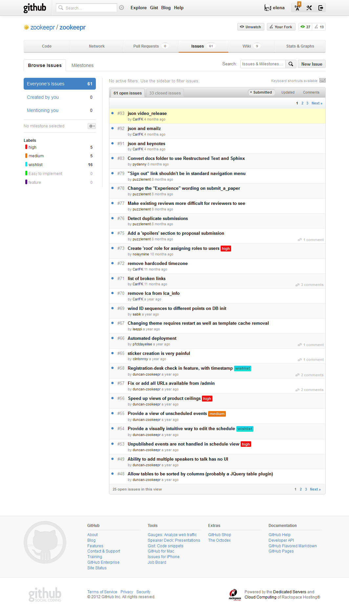
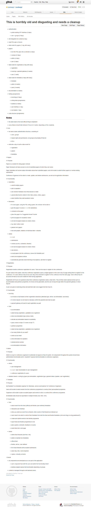
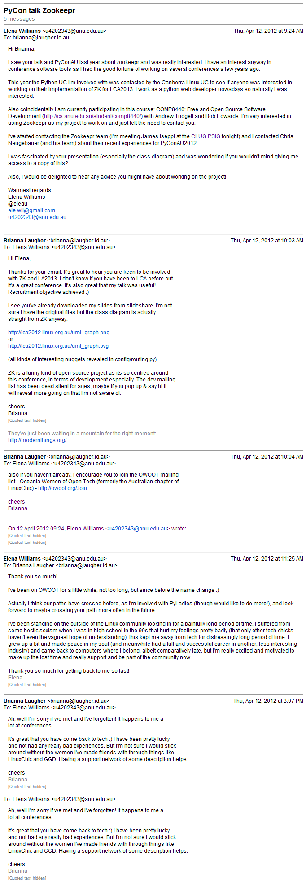
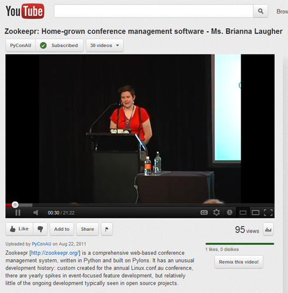

COMP8440: Free and Open Source Software Development
Zookeepr
Elena Williams
u4202343
@elequ
The "Itch"
Linux Conference Australia
They wanted to eyeball eachother meet.
- one of the world's best technical Linux conferences
- run by community volunteers
History of Linux Conference
- Conference of Australian Linux Users (CALU): Melbourne in 1999
(unconference style) - Renamed to linux.conf.au in 2001
These are the kinds of people who scratch their own itches and write their own conference software.
- php (learnt one weekend for the purpose)
- perl (popular in early 2000s)
New version of the conference management was written in language "du jour"
by whoever was motivated. Up until 2007 ...
Then There Was Zookeepr
Zookeepr: Linux Conf 2007 Sydney
Zookeepr: Linux Conf 2008 Melbourne
Zookeepr: Linux Conf 2009 Hobart
Zookeepr: Linux Conf 2010 Wellington
Zookeepr: Linux Conf 2011 Brisbane
Zookeepr: Linux Conf 2012 Ballarat
Zookeepr: Backgroup
"The Zookeepr name comes from the original working title MyLCA, bacronymed to “Maybe You Like Caressing Animals”. The last ‘e’ from ‘Zookeeper’ was dropped to reflect the Web 2.0 aspirations of the project."
Original hard yakka done in 2007 by John Ferlito
(current LCA president before he was president).
Zookeepr: Timeline
Zookeepr: Burning Questions
Zookeepr: Burning Questions
Zookeepr: Burning Questions
Zookeepr: Burning Questions
Zookeepr: The project governance structure
Zookeepr: Burning Questions
Zookeepr: Burning Questions
Zookeepr: Burning Questions
Zookeepr: Burning Questions
Zookeepr: Burning Questions
My Itch
Hi. I'm Elena.
I'm a web developer.
I'm quite in to Python.
My Itch
A few year ago I worked
on conferences.
All in PHP:
Whet my apetite, but
left me feeling like I
could do better.
In the words of Rocky:
I had unfinished business*.
My Itch
All-in-all:
Really incredible experience.
Mean time I've been honing my python.
Had thought a lot about conferences,
felt I had more to do.
Decided no matter what 2012 is a
conference year for me.
Their Itch
All-in-all:
Really incredible experience.
Mean time I've been honing my python.
Had thought a lot about conferences,
felt I had more to do.
Decided no matter what 2012 is a
conference year for me.
There is
Firstly: I'm very lucky.There was never any question that my project would be on:
Conference Management software.
This is convenient for me:
~ I have worked on technical conferences before
~ I have worked with conference management software before
~ I have worked with conference websites before
These experiences left me with an "itch". I had thought about
conference software and had the good fortune of consulting with many
esteemed academics regarding their experiences and preferences and had
been left feeling unsatisfied with how extensively I'd been able to
use this knowledge.
In recent year I have worked as a python web developer.
Me
There was never any question that my project would be on:
Conference Management software.
This is convenient for me:
~ I have worked on technical conferences before
~ I have worked with conference management software before
~ I have worked with conference websites before
These experiences left me with an "itch". I had thought about
conference software and had the good fortune of consulting with many
esteemed academics regarding their experiences and preferences and had
been left feeling unsatisfied with how extensively I'd been able to
use this knowledge.
In recent year I have worked as a python web developer.
Technical Team
"Hacking team"
Works on an annual basis for each LCA Annually (for each LCA)- Team of ~8-9
- Actual core developers: about 5
- Leader: Zookeepr "Keeper"
"Keeper" hands over to the next team the following year.
How Can I Help?
There is:
- a to do list
- uses the github issue tracker
How Can I Help: How To Contribute Page
Better than most, still not perfect.
How Can I Help: Issue Tracker
Have discussed with team already what here is actual priority, for me to look at. How Can I Help? Then There Are Pages Like This
Don't want to make an example of it, but excellent example of FOSS self-deprecation. How Can I Help? Then There Are Pages Like This

I am SO lucky!
Actually met some of team including last year's "Keeper": James Iseppi
How Can I Help?
Features New to 1.1
- Incremental display of slide content
- Font scaling based on window size
- Support for PNG alpha channels in all supporting browsers, including IE/Win
- Ability to jump to any slide, or skip a number of slides, via keyboard commands
Incremental Animation
- A demonstration of just one of the many ways to accomplish simple animation-like effects (using a diagram from "XFN and...")


Slides:
S5: A Simple Standards-Based Slide Show System
http://meyerweb.com/eric/tools/s5/
Licensed under the Creative Commons Attribution ShareAlike license.

Special Thanks!
 Brianna Laugher
Presenting call-to-action at PyCon.
Gratuitously stolen slides.
Special Thanks!
Chris Neugebaur and Joshua HeskethSpecial Thanks!
- Bob Edwards
- CLUG
- James Iseppi, for sharing a Zookeepr presentation he gave to Canberra LUG
- Stephen Walsh
- Zookeepr
- Brianna Laugher
- Chris Neugebaur and Joshua Hesketh
- Brad Hards
- Andrew Tridgell